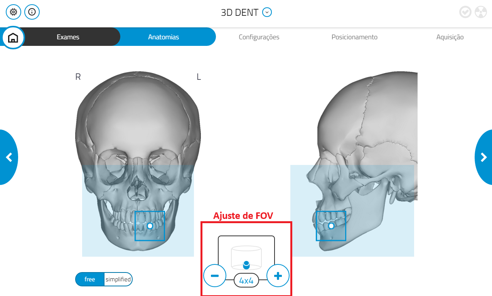
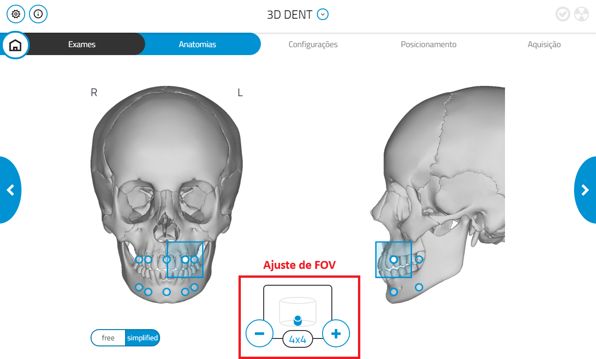

Aquisição de Exames - Tomografia
1. Seleção da opção "3D"
Para iniciar a aquisição de um exame de tomografia no software NNT, ao abrir o programa, selecione a opção representada pela imagem "3D", como destacado na figura abaixo:

2. Escolha do exame
Em seguida, selecione o exame desejado:
3. Escolha da anatomia
Agora, selecione a anatomia a ser utilizada. O sistema disponibiliza duas opções:
üîπ Anatomia "Free"
Na anatomia "Free", é possível definir manualmente a região onde o exame será realizado. O "FOV"(campo de visão) pode ser definido nos botões "-" e "+", sendo 4x4 o menor valor possível, como mostrado na figura abaixo:

üîπ Anatomia "Simplified"
Na anatomia "Simplified", é possível escolher regiões pré-definidas para a realização do exame. O "FOV"(campo de visão) pode ser definido nos botões "-" e "+", sendo 4x4 o menor valor possível, como mostrado na figura abaixo:

4. Configurações
Selecione a opção "Best Quality":

5. Reset do aparelho
Ao avançar, um aviso aparecerá informando que o apoio para o queixo será movido. Caso o paciente esteja posicionado no tomógrafo, retire-o do aparelho e clique em OK. Se não, apenas clique em OK.

A seguir, aparecerá um pedido de confirmação para iniciar o reset. Confirme clicando em Ok, conforme figura abaixo, e aguarde o aparelho executar o reset.

6. Posicionamento do paciente
Após realizar o reset, posicione o paciente corretamente no aparelho.
Ajuste os lasers de referência para que fiquem alinhados conforme mostrado na figura abaixo:

Orientações por região:
▪️ Arcada Superior
- Posicione o bloco de mordida.
- Certifique-se de que o plano de Frankfurt esteja paralelo ao solo.
- O plano sagital mediano deve estar perpendicular ao solo.
▪️ Arcada Inferior
- A base da mandíbula deve estar paralela ao solo.
- O plano sagital mediano deve estar perpendicular ao solo.